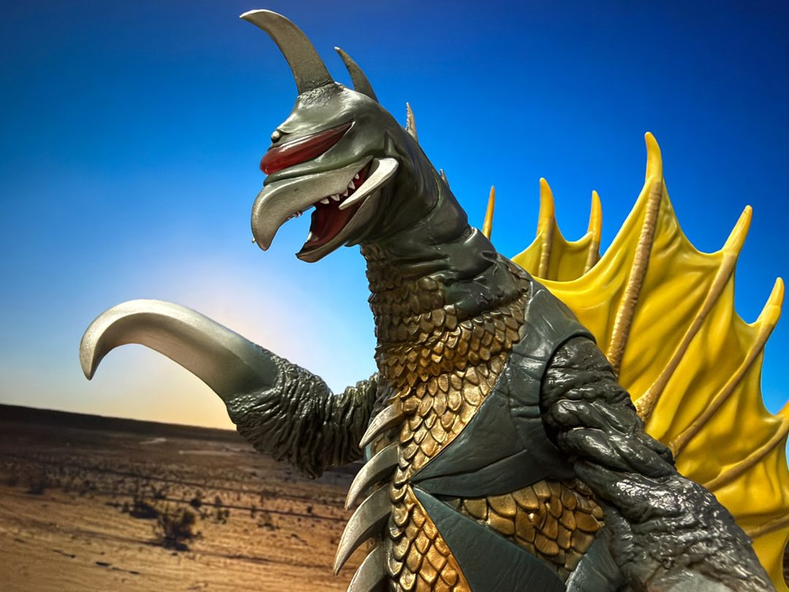
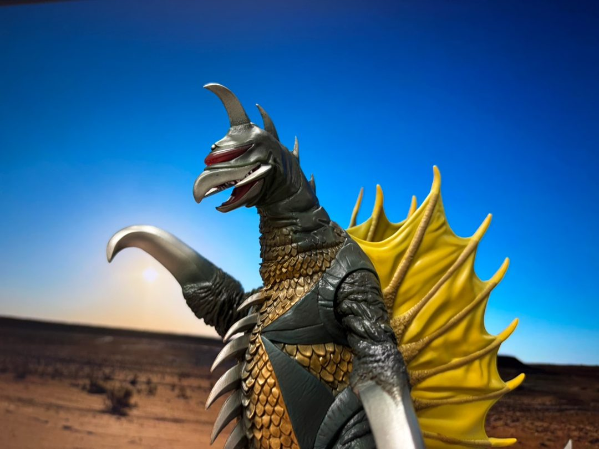

一番くじ（ゴジラシリーズ）を引いたら、怪獣ガイガンのフィギュアが出ました。やりました。

造形がすごい
昭和ガイガンそのままのデザインで、くちばしのような嘴、赤いバイザー状の目、両腕の大きな鎌、胴体の金色の鱗、そして黄色い膜状の背びれ。並べて見ると、造形の情報量がすごいです。

特撮みたいな写真
写真は砂漠と夕景の背景の前で撮りました。背景のおかげで、フィギュアというより特撮映画のワンシーンみたいな写りになっています。引いた構図だと背びれの広がりがよく分かります。
先日は友人と映画『ゴジラ-0.0』を観たばかりで、最近すっかりゴジラづいています。しばらくは部屋の主役として飾っておきます。